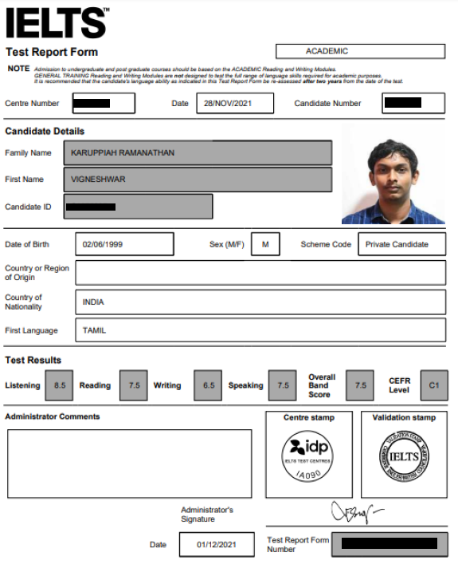
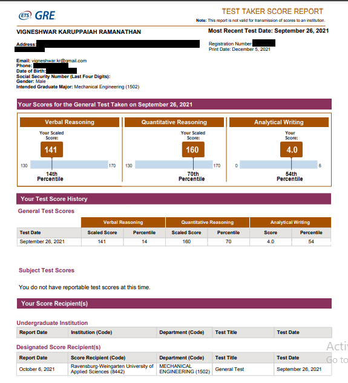
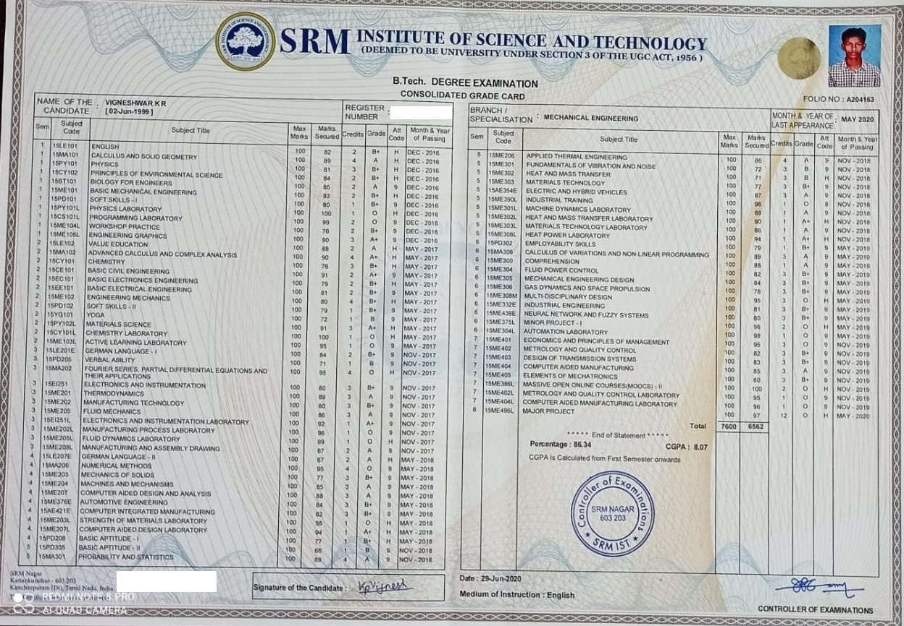

About me


M.Sc Computational Science of Engineering
Website not complete, under construction !!!!
AutoCAD - CATIA - Nx Unigraphics - Creo - Arduino
C# - C++ - Python - Java - JavaScript - .NET - HTML CSS - Microsoft SQL server - MongoDB - LaTex
Ansys Workbench - Ansys Fluent - MATLAB - Scilab
DBMS - SQL - Data structures and algorithms - OpenCV - Numpy
Additive manufacturing (FDM, SLA) - Manual & CNC lathe and mill - Welding - Drill press and hand tools
Microsoft Azure - Git - Microsoft Visual Studio - VS Code - Jupiter - Jira - Confluence


As a part of my Infosys training of Full-stack .NET Developer, i had to build a shopping application called quickart which did the following operations,
The database is build on Microsoft SQL server, which is connected to the API layer through Data Access Layer(DAL). DAl and API is implemented using the EF core and ASP.NET core. The front end is created using Angular and node npm. The backend is connected to the frontend using the service layer.For the designing and styles of the page HTML, CSS, Bootstrap are used.
As a part of my Infosys training of Full-stack .NET Developer, i had to build a travel agency application called Travelaway app which did the following operations,

The database is build on Microsoft SQL server, which is connected to the API layer through Data Access Layer(DAL). DAl and API is implemented using the EF core and ASP.NET core. The front end is created using Angular and node npm. The API part is connected to the frontend using the service layer.For the designing and styles of the page HTML, CSS, Bootstrap are used.
Underwent training which was divided into two parts.
Ielts IDP - Acadamic
GRE ETS - General Test

Attended German language classes at Goethe, Chennai.
Completed level A1 with percentange of 90 and level 2 with percentange of 65.25
Undergone training for the following concepts, passed certification examination and worked on Azure based on these concepts.

Completed a MOOC course on Basics of FEA from NPTEl, where the following concepts were covered. Passed the final exam with 78%.
Completed a course on Simulink from udemy. This course covered the basics of Simulink and taught to create Simulink models and run simulations of physical systems, assigments and projects were also completed.

Completed a course on Machine Learning from coursera, where the following concepts were covered, assigments and projects were also completed.

Undergone training for the following software, where the software's environment, features were taught and worked on various projects.

Completed a MOOC course on Principles of Metal forming technology from NPTEl, where the following concepts were covered. Passed the final exam with 83%.
Completed a course on 3D modelling using Siemens NX-Unigraphics, where the following topics were covered and acquired hands-on experience on various projects.

Completed a MOOC course on Programming, Data Structures And Algorithms Using Python from NPTEl, where the following concepts were covered. Passed the final exam with 41%.

Completed a MOOC course on Robotics from NPTEl, where the following concepts were covered. Passed the final exam with 58%.

.png)

.png)
Graduated from SRM Institute of Science and Technology, Chennai with Bachelor of Technology in Mechanical Engineering.
Completed with a percentange of 86.34 (CGPA- 8.07) and was placed in First class with distinction.
As part of my campus placement drive, got placed in two companies- Infosys and Wipro.
To view the curriculam, CLICK HERE.
To view the regulation, CLICK HERE.

Graduated my higher secondary schooling from NSN Matriculation Higher Secondary School, Chennai.
Completed with a percentange of 90.33(scored 1084 out of 1200).

Graduated my secondary schooling from Smt.Ramkuwar Devi Fomra Vivekananda Vidyalaya, Chennai.
Completed with a CGPA of 9.6 out of 10.